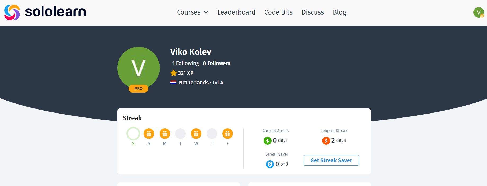
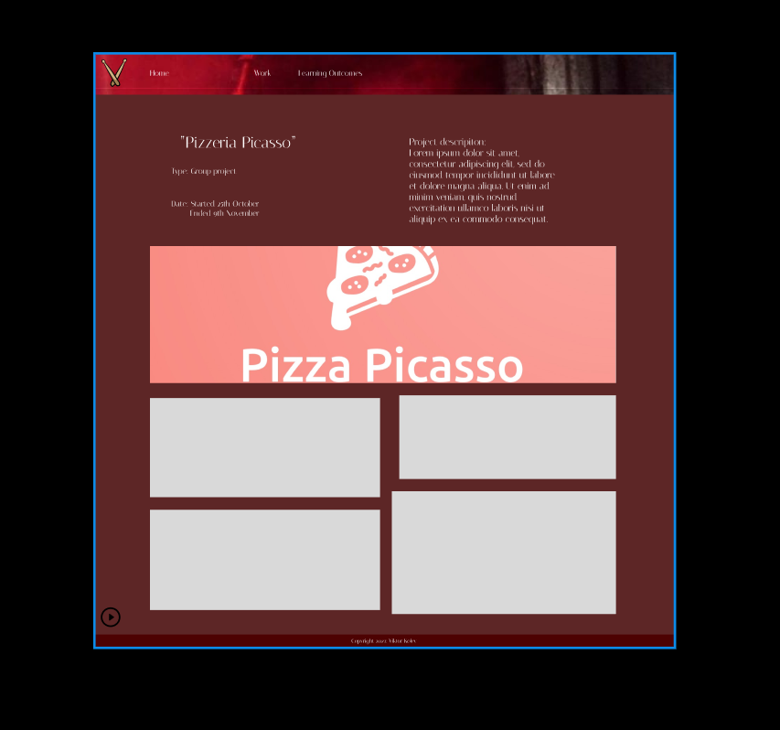
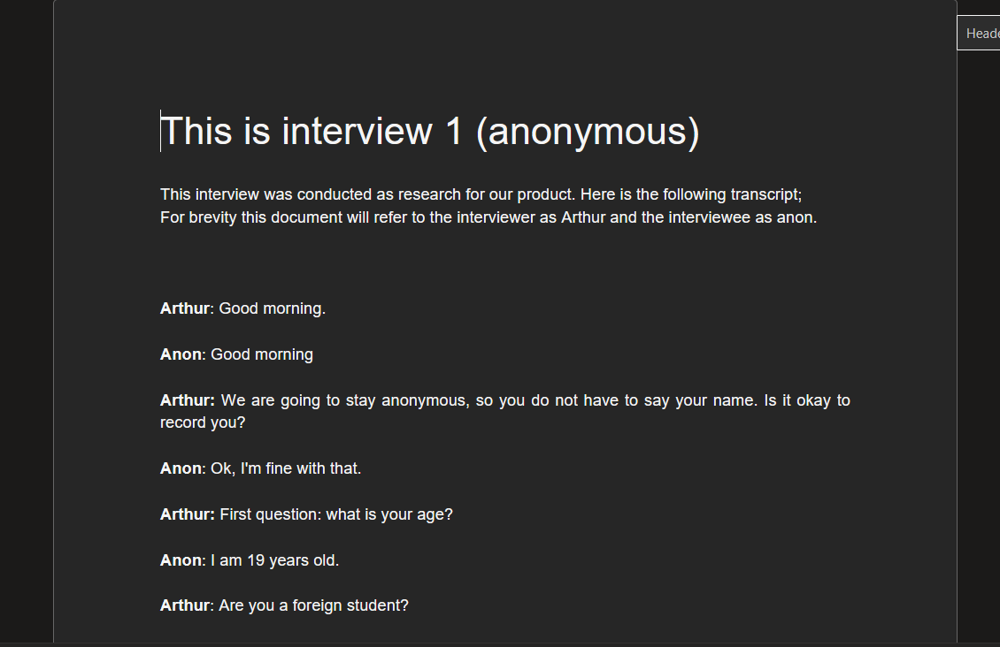
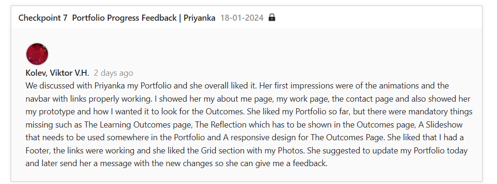

You have studied the various developments in the area of digital experience design. You have formed an opinion about it. Based on this, you justify your choice of study direction in this domain.
When choosing my study, I always searched the option for it to offer freedom and that is why I chose I chose to delve into the realm of digital design. When tasked with a project, my approach involves thorough research to ensure that I stay well-informed and up-to-date.After receiving this assignment, my first plan was to look at different portfolios online or get ideas from friends and other students. Looking back on it, I should have went to the teachers for more feedback and to ask about their opinions. When working with digital design you have to be always open for new things to learn. With courses online, class materials or just a friends' tip and opinion on it, you can see the vast majority of briliant ideas that you can implement. If I could have done something different, I would have tried to risk it and be more creative with my ideas and would spend more time learning from different sources.
You make digital products that create a specific, pur- poseful interaction between human and machine. As input for this you have made sketches, wireframes and prototypes. You use structure and style languages e.g. HTML and CSS.
With the start of our Personal assignment, we were always told to start with a Prototype, a wireframe or just a sketch of the idea that you have in your mind. At first I disregarded it, but then I realised that the Prototypes are an essential part of the process and had to start from scratch. During the many attempts of showing my Prototypes, I had finally reached the result that I was happy with and my teachers encouraged it. When I started implementing my ideas from the Prototype onto the Portfolio, I had a lot of difficulties, because of my lack of knowledge for HTML and CSS. I had a goal in my mind and knew how I wanted it to look, so I started practisiing in my free time in order to catch up. When I look back on my work, I can say that the reason things went well was because I commited to achieving my desired idea for a Portfolio. I used a lot of CSS animations and fonts, put slideshows, used grid layout and made it responsive of which I am proud.
During the developmental process you take the interests and needs of the end user into account.
When it comes to doing the development of our website, our group always put ourselves in the shoes of the end user. For that reason for the group project, in order to acquire the needs of the end user, we decided to make a survey using Google Forms. Despite having made 2 surveys, we still needed to make interviews which will helps us solidify our ideas into the implementation. The end user's interests are one of the major things needed for a good development. Looking back on my work, I could have made an interview by myself in order to see the end user's point of view and understand it. In the end we gathered enough information so that we can start working on the website.
You show iterations in the work process and you explain how feedback from users and experts has contributed to your design choices. Your design meets the needs of the end user and is aesthetically justified.
When you start a design process, you always need to understand the problem of it in order to find your design choice. Through a series of iterations, different design solutions are proposed, prototyped, and refined. With this, feedback is an essential part, because it can help you identify your end goal. It helps you ensure that the design meets the criteria and the expectations of the users. Also, when you get an insight from experts such as teachers, it can provide you with a practice or a consideration that you did not thought of. When asking Priyanka about my Portfolio, she provided me with a great idea about adding a slideshow in the about section. After implementing it, I can say that it turned out to be aesthetically pleasing. What I could have done differently is that I could have gotten more feedback from experts in order to be completely sure about my design choices.